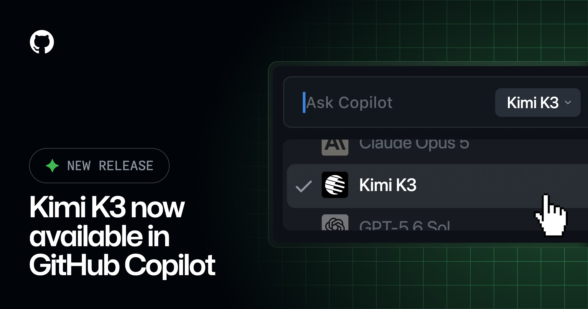
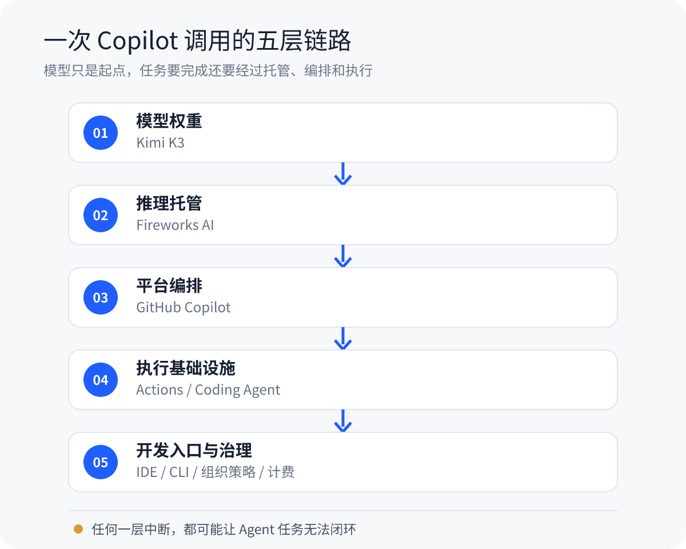
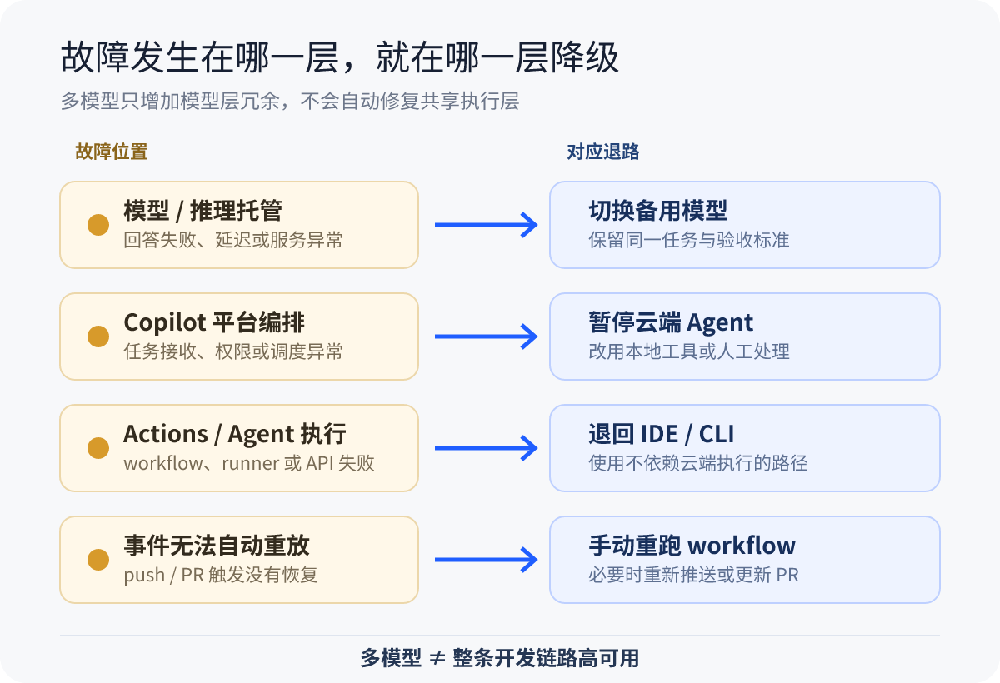

Kimi K3 进 Copilot，当天暂停又恢复：AI 编程开始拼整条链路
8 月 6 日，GitHub 宣布 Kimi K3 在 Copilot 中正式可用。
后来，同一篇公告多了两条编辑说明：GitHub 先因为 Actions 事故暂停 K3 rollout，事故缓解后又恢复开放。
先说最新状态。Kimi K3 现在是 GA，仍在渐进 rollout。如果模型列表里暂时看不到它，可能只是还没轮到。
也别急着把这件事写成“Kimi 上线当天翻车”。GitHub 状态页显示，Actions 事故开始于 8 月 6 日 15:22 UTC，K3 公告发布于 17:27 UTC。事故比公告早了约两小时，GitHub 至今也没有公布详细根因。没有证据表明 Kimi 引发了事故。
我更关心的是，这段“上线、暂停、恢复”的插曲，刚好把 AI Coding 背后的依赖关系露了出来。模型能不能回答，只是任务能不能完成的一部分。

图 1｜GitHub 官方公告图：Kimi K3 进入 Copilot 的 model picker。来源：GitHub Changelog。
K3 进入 Copilot，开发者实际得到什么
Kimi K3 会逐步向 Copilot Pro、Pro+、Max、Business 和 Enterprise 开放。可用入口包括 VS Code、Visual Studio、JetBrains、Copilot CLI、云端 Coding Agent、github.com 和移动端等。
Business 和 Enterprise 默认关闭 K3，需要管理员显式开启对应策略。GitHub 文档还列出了客户端门槛：VS Code 至少要到 1.131，部分 IDE 的最低版本仍是 TBD。
K3 的官方规格很抢眼：开放权重、原生多模态，2.8T 总参数、每个 token 激活 104B，最长 100 万 token 上下文，定位是长程编程、知识工作和推理。
这些数字来自 Moonshot AI 的模型卡，不是独立实测。模型卡里的 benchmark 使用了不同的运行配置、推理强度和工具条件，不能直接换算成“真实项目里全面超过某个模型”。
K3 也不是 Copilot 的第一个开放权重模型。7 月上线的 Kimi K2.7 Code 才是第一个可从 model picker 选择的开放权重模型。K3 的价值，是把规格更高、上下文更长的模型继续放进开发者已经在用的平台里。
价格已经同步到 GitHub 文档。每 100 万 token，输入 3 美元、缓存输入 0.30 美元、输出 15 美元；实际消耗会折算成 AI credits，1 个 credit 等于 0.01 美元。
K3 并不是 Copilot 中最便宜的开放权重选项。K2.7 Code 的三项价格分别是 0.95、0.19 和 4 美元。长程 Agent 还会反复读代码、调用工具和重试，单 token 价格低不低，并不能回答一个任务最终花了多少钱。
Actions 事故为什么会影响 Copilot Agent
这次 Actions 事故被 GitHub 标为 critical，从创建到解决持续约 10 小时 42 分钟。
状态页记录的影响包括 workflow 启动失败或中途失败、runner 异常、Webhook 受限和 Actions API 报错。GitHub Pages、Copilot code review、Copilot coding agent 也出现了失败或延迟。
事故恢复后，还有部分 push 和 pull request 触发事件无法自动重放。用户可能需要重新推送、更新 PR，或者手动重跑 workflow。
状态页能告诉我们故障症状和影响范围，却不能替代根因分析。runner 收到无效任务、队列积压、ARC runner pod 卡住，这些都是恢复过程里公开的现象。详细 RCA 还没发布，现在不能把其中任何一项写成最终原因。
但工程上的影响已经很直观。云端 Coding Agent 要接收事件、读取仓库、编排任务、启动执行环境、运行测试，再把结果交回来。Actions 这一层出问题，模型即使还能生成答案，任务闭环也可能断掉。
模型选型正在变成一份“运行时合同”
把一次 Copilot 调用拆开，大致会看到这样几层：
Kimi K3 模型权重
→ Fireworks AI 推理托管
→ GitHub Copilot 编排
→ Actions / Agent 执行
→ IDE、组织策略与计费
图 2｜模型只是起点，任务完成还依赖推理托管、平台编排、执行基础设施和开发入口。
“开放权重”和“本地运行”是两件事。K3 的权重可以获取、部署和微调；在 Copilot 中选择 K3，调用的仍是托管服务。GitHub 文档写明，K3 由 GitHub 托管在 Fireworks AI 上，客户提示词和回复不会发送给原始模型开发者 Moonshot AI。
这句话的边界要看清：不发送给 Moonshot，不等于模型在你的电脑上运行，也不等于代码没有经过托管链路。
于是，团队选模型时要确认的内容变多了：谁负责推理，数据经过哪里，哪些客户端可用，管理员能控制什么，怎样计费，出了故障又能退到哪里。
如果某个模型或推理服务异常，切模型可能有效。可一旦问题出在共享的 Copilot 编排或 Actions 执行层，模型菜单再长也救不了当前任务。多模型解决的是模型层冗余，不等于整条开发链路已经高可用。

图 3｜故障发生在哪一层，就在哪一层准备退路；多模型不等于整条链路高可用。
谁值得试，怎么试
个人开发者可以从低风险仓库开始。等 K3 出现在 model picker、客户端版本也满足要求后，选 5～10 个真实任务，让它和当前常用模型做同题对比。
任务最好分开测：复杂 Bug、跨文件修改、测试修复、前端视觉任务。记录最终补丁是否正确、首次验证能否通过、工具调用有没有失败、用了多久、消耗了多少 credits。不要只看回答写得像不像，更不要只看榜单名次。
测试、构建和 Diff 审查照常保留。换了模型，并不会少掉这些工程责任。
团队管理员在开启 K3 policy 前，还要核对托管路径、数据治理、内容过滤、适用仓库和预算。降级也要分层准备：模型或推理托管异常时切模型；Actions 或云端 Agent 异常时，退回不依赖这条执行链的本地 IDE、CLI 或人工 workflow。
这次发布给普通程序员多了一个模型选项，也给技术负责人多了一张检查表。
等 K3 出现在你的 picker 里，先别急着找一道 Demo 题。拿同一个真实仓库任务，让它和现用模型各跑一次，比较最终补丁、验证结果和总 credits，再决定要不要换默认模型。
参考资料
- GitHub Changelog：Kimi K3 is now available in GitHub Copilot
- GitHub Status：Incident with Actions
- GitHub Docs：Models and pricing for GitHub Copilot
- GitHub Docs：Supported AI models in GitHub Copilot
- GitHub Docs：Hosting of models for GitHub Copilot
- GitHub Changelog：Kimi K2.7 Code is generally available in GitHub Copilot
- Moonshot AI：Kimi K3 Model Card
- Moonshot AI：Kimi K3 GitHub Repository